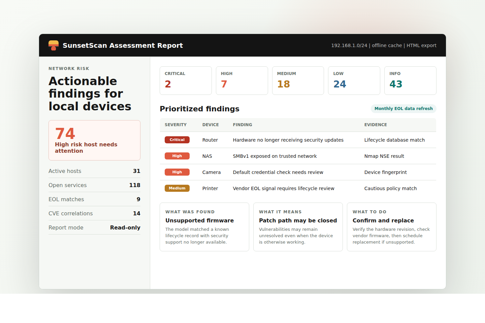

Know what is online
Fast host discovery, flexible target input, MAC vendor lookup, hostname resolution, service detection, and optional passive evidence from mDNS, SSDP, and DHCP.
Open-source local network security auditing
Find devices that need lifecycle review, exposed services, and fixable security risks across your local network.
SunsetScan is published on GitHub as an MIT-licensed scanner for local, read-only network auditing.
Built for home networks and small IT teams
SunsetScan discovers active devices, fingerprints services and hardware, checks software and product lifecycle status, and produces a plain-English report that explains what was found and what to fix next.
The scanner is local, read-only, and designed for practical network hygiene: routers, switches, cameras, NAS devices, printers, access points, web interfaces, SSH, SMB, SNMP, FTP, TLS, DNS, UPnP, and mDNS.
The v2.2 releases expanded hardware coverage; v2.2.1 improves exports from both terminal menus. Read the release notes.
What it checks
Fast host discovery, flexible target input, MAC vendor lookup, hostname resolution, service detection, and optional passive evidence from mDNS, SSDP, and DHCP.
Checks for insecure protocols, anonymous FTP, SMBv1, missing web headers, exposed admin panels, UPnP exposure, and risky TLS or SSH configurations.
Correlates detected service versions with CVE data, software EOL records, and hardware lifecycle data without calling external APIs during the scan.
Generates self-contained HTML and JSON reports with risk scores, severity groups, evidence, plain-English explanations, and prioritized recommendations.
End-of-life intelligence
SunsetScan uses software EOL data from endoflife.date and a dedicated hardware lifecycle database for network gear, cameras, printers, NAS devices, security appliances, access points, service-provider equipment, and industrial/OT devices.
The hardware database is organized into home, office, enterprise, industrial, service-provider, and full profiles. The Debian package includes the complete validated database.
Smart EOL profiles
Profiles are built from validated local artifacts and loaded during scans without external API calls.
Consumer routers, cameras, NAS, printers, access points, and smart-home gear.
Small offices, prosumer labs, managed SMB networks, and ordinary office equipment.
Campus, datacenter, enterprise security, routing, switching, and mixed networks.
Industrial/OT sites plus the ordinary office network gear often found alongside them.
ISP, carrier, telco, optical, access-network, enterprise, office, and home coverage.
Every hardware lifecycle record in one local install for the broadest audits.
Ambiguous vendor EOL or discontinued signals are treated as lifecycle review items unless the source confirms that support or security updates have stopped.
Setup and update commands refresh SHA-256 validated local caches. Actual scans read local data, which keeps assessments predictable and usable without internet access.
The scanner code is MIT licensed. The hardware EOL database artifacts are distributed under CC BY-NC 4.0.
Raw vendor directories without exact row-level lifecycle evidence stay out of the public database until they can be parsed and reviewed safely.
How it works
Run a quick inventory, an IoT-focused pass, or a full assessment against a subnet or host list.
Combine MAC OUI, banners, HTTP fingerprints, TLS certificates, SSH, UPnP, SNMP, Wappalyzer, mDNS, JA3S, and port heuristics.
Map detected versions and models against local CVE, software lifecycle, and hardware lifecycle caches.
Review severity, risk scores, evidence, and numbered remediation steps in a self-contained HTML file.
Reports people can act on
SunsetScan reports group findings by severity and host, show per-device risk scores, and explain each item in direct language: what was found, why it matters, and what to do next.

Install today
The Debian package works on Debian-family systems, including Ubuntu and Kali. Other Linux distributions can install from source. On Windows, use WSL2.
sha256sum -c sunsetscan_2.2.1-1_all.deb.sha256
sudo apt install ./sunsetscan_2.2.1-1_all.deb
sudo sunsetscan --setup
sudo sunsetscangit clone https://github.com/NoCoderRandom/sunsetscan.git
cd sunsetscan
./install.sh
./sunsetscanOpen source
SunsetScan is developed in the public GitHub repository. The site links directly to the source, release history, issue tracker, and installation instructions so users can inspect the tool before running it.